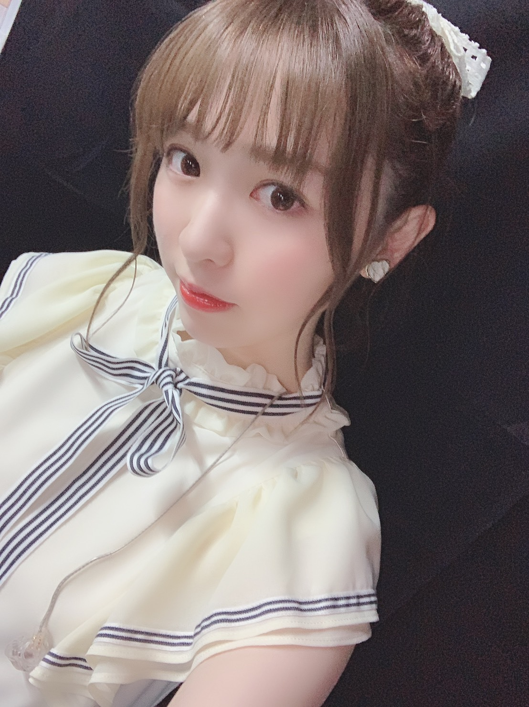
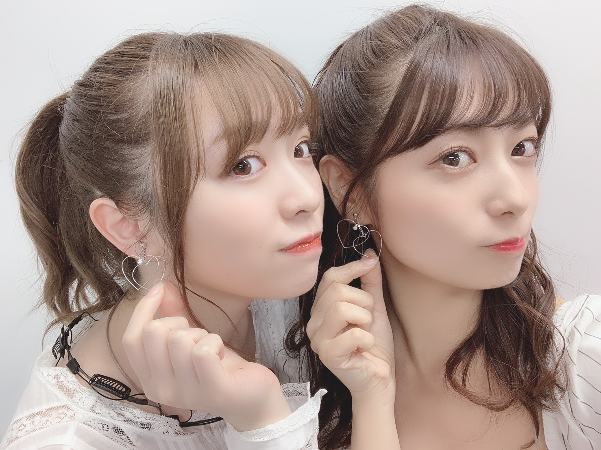

2019/0528Tueわさび醤油
こんばんは

ゆっちゃんが
可愛い衣装なんだからせっかくなら撮りなよ！
と言ってくれて携帯を貸してくれました。笑
ライブで披露したSing Out!は
フルで踊ったのですが
いつもライブは好きだし楽しいけれど
その楽しさとはまた違う感覚と言いますか、、
上手く説明が出来ないのですが
本当に心の底から楽しくてたまらなくて
何だろうもう今から飛んでいきそうなくらい
の気持ち。笑
黄緑と黄色のサイリウムや
タオルやうちわも沢山見つけられて
勇気付けられたし、本当に嬉しくなりました。
私が個人的に嬉しかったのは
ゴルゴンゾーラとAm I lovingを
披露できた事。
衣装やアクセサリーもみんなで相談して
スタイリストさんに
沢山わがままを言って用意して頂きました！
お越し下さった皆様、握手会等で
応援を言葉を下さった皆様
本当にありがとうございました！

「あむいらびにっとすっごい可愛かったあ♡」
と少々読み方に間違いがありましたが
ゆっちゃんがずっと褒めてくれました。笑
ゆっちゃんと最後一緒に隣で踊れて
本当に嬉しかった！
13日の金曜日また一緒に歌えてよかった〜
大好きゆっちゃん！

かりんとは最後の最後に一緒に
舞台に立って一緒に踊る事が出来なかったけれど、、
袖で私が出てるユニットとかをずっと
見てくれていて、可愛かったよって
普段言ってくれない言葉を言ってくれたり。笑
一緒風船踊りたかった〜ってずっと言ってくれてて
それにまた泣きあったりして、、
でもね、かりんの唐揚げ食べに行くので
また会えるの分かってるから
寂しいけど、笑顔で送り出したい！
二人とも、本当にお疲れ様でした。

with まあやさん
前回の握手会で頂いた沢山のお花
遅くなりました！
色とりどりで本当に綺麗だし
書いてある一言一言が本当に嬉しいです。
眺めるのが本当に好きなんです、
花好きにはたまらない！
BOMB、EX大衆、B.L.T.
発売中です！
それぞれいろんな私が見られると思います。
とっても素敵に撮ってくださいました！
是非インタビューもご覧ください
30日には月刊エンタメが発売です！
たまちゃんと出てます〜
みり愛
2019/05/28 21:12


コメント(356)
ライブお疲れ様でした！
行けなかったのが凄く残念。。。
真夏の全国ツアーは絶対に行くね！
応援してます！
ゴルゴンゾーラもAm I Lovingもめちゃくちゃ可愛かったよ
ライブおつかれ！行きたかった！笑
握手会またいくねー！
衣装ほんとに可愛いね
ゆったんとかりんちゃん卒業しちゃうの悲しいけど
みりあがゆったんみたいな太陽のような存在になってね
選抜ライブ行かせてもらったよ。本当にステージ上でみり愛は輝いていてすごく綺麗だった✨
ゆったんとの最後。花道などでじゃれ合うのを見て本当にこれがもう見れないと思うと涙がね。悲しいけど、ゆったんも前を向いて卒業したのでその背中を押せたらなと思うよ！
みり愛もこれからの選抜の活動期間楽しんでね！！
これからも応援してます！
選抜ライブお疲れ様でしたー！
個握分のSing Outが今日届いたよ。
七夕当日にみり愛に会えるのが楽しみで仕方ないです。
それまで頑張るから、みり愛も頑張ってね〜
では。
充実感がある日々をお過ごしですかね？
でも、体調にはくれぐれもお気をつけください。
僕も実習頑張ります。
宮城行くから待っててね
テレビで最近よく見れて嬉しいです！！
選抜ライブ当たって見に行けました！！
Sing Out初めて聞けて嬉しかったです。
そして、なんと行っても新ユニット曲のゴルゴンゾーラとAm I Loving？の初披露を見れて本当に可愛かったし、嬉しかったです！！
コールも沢山しました！！
みり愛のサイリウムカラーで、46時間tvのみり愛のタオル掲げて行きました！
次会えるのは23rdの個握だと思うのでその時に選抜ライブの感想伝えに行きたいです。
暑いけど体調に気をつけて頑張ってください！
個握でも言ったけど改めて選抜おめでとう！4年くらい前から応援してて好きで。やっとみりあの良さをみんなに知ってもらえてよかった！おれも部活も勉強も、結構いい感じだから！頑張るし、みりあまじ応援してるから頑張って！！無理しないでね！しっかり休んで！
今日もお疲れ様~◎
選抜ライブ行ったよ！！！ゴルゴンゾーラかかった時が
1番テンション上がって飛び跳ねてたよ （笑）
きぃちゃんとの絡みとか楽しそうな姿が見れてすっごい元気貰えました \♡/
本当にありがとう！そして、選抜での初ライブおめでとう
何処にいても、すっごい輝いていました。
今回の選抜ライブは結局チケット取れず終いでした
生ゴルゴンゾーラ観たかったなー
またどこかで披露してくれるのを楽しみにしてるー
ゆったんもかりんも卒業しちゃって寂しくなっちゃうけど、その分みり愛が輝いてくれるって期待してるよ
次は6/30の個握まで会いにいけないけど、楽しみに待ってるよ
横アリのライブいけてないけど
絶対楽しかったってことはわかる。
それとみり愛が本当に選抜に入れてよかったと思う！
これからも頑張ってね！
それと、個握が全然当たらなくてかなしい。
23rd記念選抜ライブお疲れさまでした。
結局、最後の最後まで奮闘しましたが中には入れませんでした。。
一生の不覚、こんなにも自分の運命を恨んだことはないかも。
ただ、中に入れた方々から素晴らしかったと言ってもらえ
自分のことのように嬉しく感じました。本当に良かったです。
今回は入れなかったこの思いは全ツにぶつけたいと思います。
色んな会場でみり愛ちゃんを追いまくりますので、
素晴らしいパフォーマンスを期待してます！！
・・・ほんと、可愛い写真だなぁ。
ライブおつかれさまでした！
行くことはできませんでしたが
楽しかったみたいで何よりです。
全ツでもみり愛ちゃんのユニット観れたらいいなあ、、
最近みり愛ちゃんを見る機会が多くて本当に嬉しいです。
みり愛ちゃんありがとう！！！
それでは。
(^o^)
ライブお疲れ様っ。
本当に卒業って寂しいよねぇ。
2人ともアンダーライブで関わってきただろうしね。
どうでしたか？
もっともっと輝くみり愛が見たいです
頑張ってください！
横アリでの選抜ライブお疲れ様でした！心の底から楽しい時間だったのならとても良かったですね！新曲2つとも聴きたかった…また別の機会で絶対聴きたいです！その時まで楽しみにしてます！
ゆっちゃんと写ってる画像とても可愛い！かりんちゃんと一緒に踊っている風船も最後見たかった、、たくさんの思い出を大切に！
雑誌もチェックしますよ！
ゆっくり休んでください。そしてみり愛ちゃんに早く会いたいです！
1枚目の写真ヤベー！
勿論全部可愛いけど。
ライブお疲れ様！
初選抜でのライブは特別やね！
これから先も今回の気持ち忘れんように楽しんで！
また2人卒業してしまって寂しいけど
今後の2人の活躍に期待する！(というかもうしてる)
最近も忙しそうで体調管理は気をつけて！
全ツ東京・大阪申し込むから
当たったときは楽しみに夏まで頑張る！
気温変化が大きい時期ですが、
体調管理に気をつけて明日からもまた頑張ってください。
ぼむすけ
でも、みんなの感想見るとめちゃくちゃ楽しそうに踊ってたり
エモエモのエモがあったみたいですね！笑
6/30の個握に自身2回目となる握手会に参加します
また、オリジナルTシャツ着ていく予定なので、よろしくお願いします
全ツも当選して目に焼き付けたいと思います！
選抜ライブお疲れ様！
自分は見れなかったけどみり愛が心の底から楽しめたなら良かったです！
自分も風船見たかったです。またライブとかで見れる事を楽しみにしてます！
次のブログも楽しみにしてるね！
改めて初選抜おめでとう！！
みり愛が選抜で踊ってるとこ見たかったな〜
優里とは最後同じステージに立てて良かったね
かりんちゃんの唐揚げ食べに行くんだね！
俺もいきたいから行っていいですか？笑笑
握手会がある度にお花の写真載せてくれてるよね笑
みり愛のそういうファン思いなとこ好きです！
6/30ビッグサイトで会えるのを楽しみにしてます！
ちょっと変な文章になっちゃったかな笑
これからも応援してます！
選抜ライブ見に行きました。
とにかくめちゃくちゃ嬉しかったです。
みり愛ちゃんがsing outでカメラに抜かれた瞬間
涙が出そうになって本当にうれしくて
みり愛ちゃんが居る～って席は遠かったけど
ずっとどの曲もみり愛ちゃんを目で追ってました。
どの曲も楽しそうで
夏曲の所でれいかちゃんとじゃれるみり愛ちゃんは
とてもかわいかったです。
浴衣姿のみり愛ちゃんも見れて
ダンスナンバーで本当に見惚れるくらい
カッコいいダンスをして
改めてみり愛ちゃんのダンスが好きだなぁって
思いました。
楽しそうに踊ったり歌ったりしてる
みり愛ちゃんが見れてとても幸せだったし
最高のライブでした。
終始嬉しくて感動して、
周りにみり愛ちゃん推しがいっぱい居て
それも嬉しくて本当に最高でした。
ゴルゴンゾーラとAm I loveingは
もうとんでもなく可愛かったです。
ステージの上でパフォーマンスする
みり愛ちゃんはきらきらしてて大好きです。
幸せを沢山ありがとう。
６/３０日の握手会で感想は伝えるますっ
これからもみり愛ちゃんらしく
みり愛ちゃんのペースで頑張ってね
ずっと応援してますっ
本当に沢山の幸せをありがとうみり愛ちゃんっ
みり愛ちん選抜ライブ行きました！めちゃくちゃ良かったですほんと！キラキラしててほんと輝いてた
遠かったけど双眼鏡でずっと見てたよ！笑 1曲目のSingOutでみり愛ちんが踊ってる！選抜にいるって実感が改めて湧いてきて静かに泣いてました笑 モバメで踊りにかける想いとか知ってたからなおさら感動しちゃって、、笑 すごくしなやかだし一つ一つの動きが丁寧で大きくて綺麗だったよ！！！！！！
ゴルゴンゾーラとアムアイラビングは可愛すぎて何回か死にました笑 いやもうほんと最高だったなあ
次のライブはもっと近くで見ていたいって思いました！全ツ絶対行きたい
ゆっちゃんとかりんちゃんの卒業寂しい、二人ともみり愛ちんと絡みあるメンバーだったから寂しいとは思うけど、そういう変化に対応していくみんなの姿をこれからも見続けたいと思いました！ずっとずっと応援してます！！！
りか
みり愛ちゃんのダンスほんとに綺麗！
どこの場所でも見つけます！！
握手会楽しみ♡ͥ ♡ͦ ♡ͮ ♡ͤ
可愛い子が可愛い衣装、着てると
ほのぼのする～！
体調に気を付けて！
んじゃね～！
写真全部可愛い❤︎でも1枚目の自撮り可愛すぎて息止まりました。ほんとに可愛い可愛い。早く会いたい〜、、
かりんちゃん、ほんとに風船好きでいてくれて嬉しい！私も好きだから！私も一緒に風船踊りたいなぁ、なんて☺︎
握手会、まだ先だけど楽しみ〜！みり愛ちゃんも楽しみにしててね？w
ライブに握手会にお疲れ様！！
全部行きたかったけど、仕事で全部行けなかった…
まだ選抜入りのお祝いができてないから、何か送らせてもらうね！！
これからさらに忙しくなるかもしれないけど、体調には気をつけてください
次のブログも楽しみにしてるよ〜
急に四字熟語じゃなくなるタイトルそういうの好きですw
選抜ライブお疲れ様でした！
ゴルゴンゾーラとAm I Loveing？聴きたかったなぁ。
神宮は絶対当ててみせるのでそこで披露してくれると嬉しいです！
あ、あと6/8の仙台個握行きます！！
楽しみです〜！
すごい楽しかった！
一生懸命、黄緑と黄色のサイリウム振って応援してたよ！
新曲も聴けて、みり愛ちゃんのキレキレのダンスも見れて大満足でした(*^^*)
ライブお疲れ様！
初選抜としての初ライブ見に行けなくてごめんなさい！
ゴルゴンゾーラにAm I Loving 披露できて良かったね！
今度の宮城個握楽しみにしてます！
宮城の個握いくからね！！
相変わらず大人っぽくて可愛いねぇ！
ライブには行けなかったけど、みり愛が楽しそうでなにより！
ゆったんもかりんちゃんもほんとに仲良さそうだから寂しいかもしれないけど、笑顔で送り出そう！
そして全ツの大阪応募したよ！
当たれば個握で報告しに行くね！
またコメントしに来るね！
みり愛に幸あれ！
選抜ライブのみり愛めっちゃ輝いてたよ！スタンドからだったけどよく分かった！
夏のライブも頑張って当てて行くよ！
握手会は9月まで行けないけど楽しみに待ってるね！
コメントする